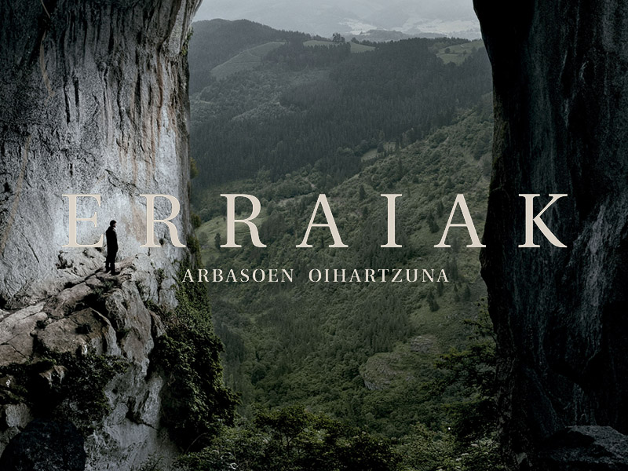

Skip to content
Work
About
Contact
Vitoria-Gasteiz
Back to work
Erraiak
Type
Documentary
Role
Director of photography
Watch on
Filmin

Watch on Filmin
Open on Filmin
Previous
Gasteiz Calling
Next
#Manu19